Project Highlights
Executive Summary
This case study addresses the challenge of automated visual quality inspection under severe industrial data scarcity (39 training images). We designed and benchmarked an end-to-end PyTorch deep learning pipeline on the official MVTec AD benchmark (Bottle category). Evaluated across 5 modeling configurations, the framework progresses from lightweight CNN baselines to fine-tuned ResNet50 architectures. The resulting pipeline achieves 100.0% accuracy on binary defect detection and 75.0% accuracy on multi-class anomaly classification. To bridge the industrial black-box trust gap, we integrated Grad-CAM activation heatmaps coupled with quantitative Intersection over Union (IoU) spatial validation, providing plant engineers with verifiable anomaly localization proof.
Main Contributions
Key engineering contributions executed during the design and validation of this project:
Data Pipeline Architecture
Engineered an end-to-end PyTorch data pipeline with spatial augmentations, normalization, and class-weighted loss handling.
Model Benchmarking
Designed and trained 5 distinct modeling workflows comparing custom CNN baselines against ResNet50 Transfer Learning.
Domain Fine-Tuning
Implemented low-learning-rate fine-tuning strategies that boosted multi-class anomaly accuracy from 33.3% to 75.0%.
Grad-CAM XAI Integration
Integrated Gradient-weighted Class Activation Mapping targeting layer4 feature maps to generate visual saliency overlays.
IoU Spatial Validation
Developed an automated evaluation protocol binarizing saliency maps to compute quantitative IoU scores vs GT masks.
Experimental Visualizations
Produced 22 comprehensive experimental figures, loss curves, confusion matrices, and test sample inspection grids.
Technical Skills
Problem Statement
Automated visual quality inspection is critical for modern industrial manufacturing lines. Traditional computer vision heuristics (such as simple color thresholding or edge detection algorithms) degrade when encountering micro-fractures, subtle surface contaminations, reflections, and non-rigid structural anomalies.
While deep learning provides robust pattern recognition capabilities, deploying neural networks into real-world manufacturing environments introduces strict engineering constraints:
- Extreme Data Scarcity: Defective production samples are rare in industrial lines, making large-scale supervised training infeasible.
- Class Imbalance: Healthy components heavily dominate production data, skewing standard loss functions toward false safe approvals.
- Black-Box Interpretability Limits: Plant engineers require quantitative spatial verification (XAI) proving that a model focuses on genuine physical anomaly zones rather than background reflections.
The objective of this case study is to design, benchmark, and quantitatively validate an end-to-end Computer Vision pipeline addressing these constraints using the official MVTec AD benchmark.
Dataset & Anomaly Characterization
We evaluate our framework on the official MVTec Anomaly Detection (MVTec AD) benchmark, specifically targeting the Bottle category. The dataset reflects real-world industrial inspection conditions:
- Binary Split: 229 healthy
Goodsamples vs 63 defectiveBadtest samples. - Multi-Class Anomaly Split: 3 distinct defect categories (broken_large, broken_small, and contamination) with a constrained training subset of 39 total images across all defect categories.
- Pixel-Level Ground Truth: High-resolution binary segmentation masks provided for quantitative spatial localization scoring.


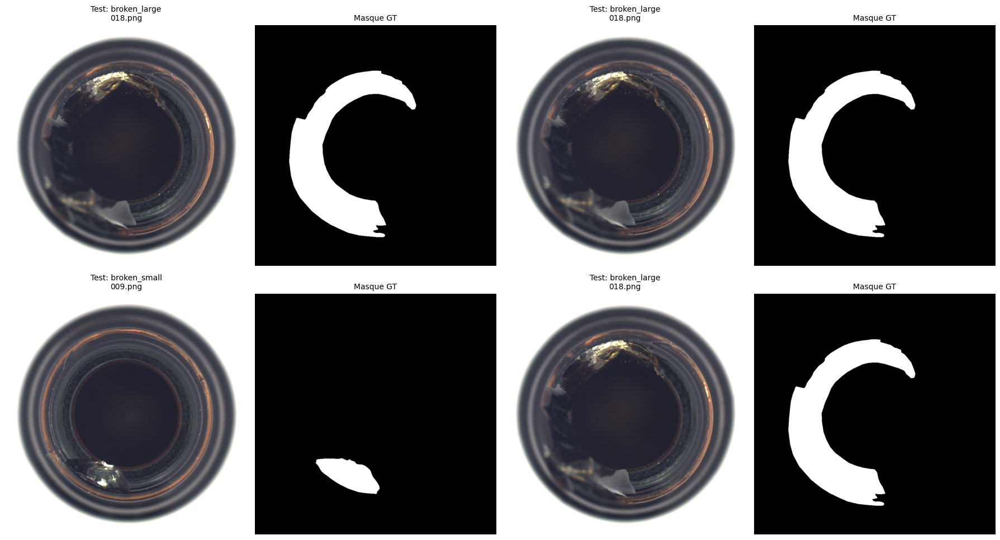
Data Preprocessing & PyTorch Data Pipeline
To standardize input representations while mitigating overfitting on small sample sizes, a PyTorch preprocessing pipeline was engineered:
- Spatial Normalization: Input images are resized to
224 × 224pixels for spatial compatibility with standard CNN backbones. - Data Augmentations: Random horizontal flipping and mild rotations (±10°) artificially increase geometric sample variance.
- Standardization: Channel normalization using ImageNet mean (
[0.485, 0.456, 0.406]) and standard deviation ([0.229, 0.224, 0.225]) vectors.
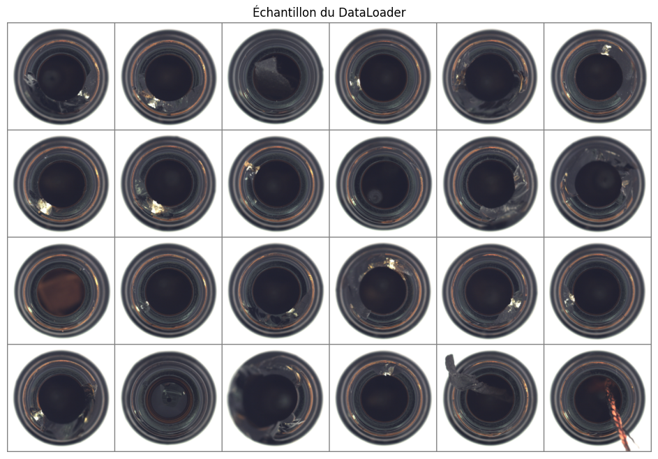
[B, 3, 224, 224]), data augmentations, and normalization transformations prior to model forward passes.
Global System Architecture
The diagram below outlines the modular system architecture, connecting raw data ingestion to pre-training, model evaluation, Grad-CAM heatmap extraction, and IoU spatial validation.
MVTec AD Ingestion
Raw bottle images & pixel-accurate Ground Truth segmentation masks.
MVTec BenchmarkPreprocessing
Resize 224x224, Augmentation pipeline & ImageNet Normalization.
PyTorch DataLoaderTraining Pipeline
Comparative execution across Custom CNN and ResNet50 Transfer Learning.
Binary & Multi-ClassModel Evaluation
Loss trajectories, confusion matrices, Accuracy, Recall & F1 metrics.
Evaluation SuiteGrad-CAM (XAI)
Feature activation heatmap extraction from layer4[-1] gradients.
IoU Validation
Binarized activation map alignment vs GT segmentation masks.
Spatial Precision MetricModel Architectures & Training Configuration
To evaluate the impact of network depth, parameter initialization, and transfer learning strategies under data scarcity, two primary network families were implemented: a custom 3-block CNN baseline and residual networks (ResNet50 for binary, ResNet18 for multi-class).
Custom CNN Architecture (SimpleCNN)
A lightweight 3-block Convolutional Neural Network built from scratch in PyTorch. Input tensors of shape 3 × 224 × 224 pass sequentially through 3 Conv-ReLU-MaxPool blocks. Spatial dimensions decrease from 224×224 down to 28×28 over 128 channels, producing a flattened vector of 100,352 features fed into dense linear layers.
Residual Network Architectures (ResNet50 & ResNet18)
Transfer learning was conducted using pre-trained residual backbones from torchvision.models. For Binary Detection, a 50-layer ResNet50 (ImageNet-1K V2) backbone was adapted by replacing the final linear layer (fc: 2048 → 2). For Multi-Class Anomaly Classification, a 18-layer ResNet18 (ImageNet DEFAULT) was used (fc: 512 → 3).
Feature Extraction vs Partial Fine-Tuning Strategies
| Transfer Learning Strategy | Backbone State | Trainable Parameters | Optimizer & Learning Rate (LR) | Primary Scope & Rationale |
|---|---|---|---|---|
| Feature Extraction (ResNet18 / ResNet50) | Frozen (All backbone layers requires_grad = False) |
Only final classifier head fc |
1e-3 (Adam on fc.parameters()) |
Preserves low & high-level ImageNet representations; prevents catastrophic overfitting on small datasets. |
| Partial Fine-Tuning (ResNet18 Multi-Class) | Partially Unfrozen (layer4 + fc set to requires_grad = True) |
High-level feature block (layer4) + classifier head fc |
Differentiated Adam: • layer4: 1e-5 (preserves spatial features)• fc: 1e-4 (adapts 3-class head) |
Allows deep convolutional filters in layer4 to adapt specifically to glass surface anomaly textures without destroying low-level edge features. |
Hyperparameter & Training Configuration Matrix
| Hyperparameter / Component | Track 1: Binary Classification (Good vs Bad) | Track 2: Multi-Class Classification (3 Classes) |
|---|---|---|
| Input Tensor Size | 3 × 224 × 224 |
3 × 224 × 324 (Resized to 224 × 224 × 3) |
| Evaluated Models | SimpleCNN • ResNet50 Transfer Learning | SimpleCNN • ResNet18 FE • ResNet18 Partial FT |
| Optimizer | Adam (lr=1e-3) |
Adam (CNN: 1e-4 | ResNet FE: 1e-3 | ResNet FT: 1e-5 & 1e-4) |
| Epoch Count | SimpleCNN: 50 epochs | ResNet50: 20 epochs | SimpleCNN: 30 epochs | ResNet18 FE: 30 | ResNet18 FT: 30 |
| Loss Function | SimpleCNN: Weighted CrossEntropyLoss (weights [5.6923, 1.2131])ResNet50: Standard CrossEntropyLoss |
Standard CrossEntropyLoss (unweighted) |
| Class Imbalance Handling | Inverse class frequency weights (39 Bad vs 183 Good) | Equal cross-entropy penalty across 3 anomaly classes |
| Pretrained Backbone | ResNet50_Weights.IMAGENET1K_V2 |
ResNet18_Weights.DEFAULT |
| Hardware Environment | NVIDIA T4 GPU • PyTorch 2.x • CUDA 12.x | NVIDIA T4 GPU • PyTorch 2.x • CUDA 12.x |
Experimental Setup & Final Performance Overview
To isolate architectural performance from data scale effects, experiments were partitioned into two evaluation tracks:
| Inspection Track | Target Classes | Evaluated Models | Primary Evaluation Objective |
|---|---|---|---|
| Track 1: Binary Detection | Good vs Bad (2 classes) |
Custom CNN Baseline • ResNet50 Transfer Learning | Assess coarse anomaly detection and recall on defective samples. |
| Track 2: Multi-Class Detection | broken_large, broken_small, contamination (3 classes) |
Custom CNN • ResNet18 FE • ResNet18 Partial FT | Benchmark multi-class accuracy under severe sample scarcity (39 images). |
Final Performance Overview
| Task / Metric | Best Model Architecture | Strategy / Method | Quantified Result |
|---|---|---|---|
| Binary Detection | ResNet50 | Transfer Learning | 100.0% Accuracy |
| Multi-Class Anomaly | ResNet18 | Partial Fine-Tuning (layer4 + fc) | 75.0% Accuracy (0.74 Macro F1) |
| Visual Explainability | Grad-CAM | Targeting layer4[-1] Feature Maps |
✓ Heatmap Activation Maps |
| Spatial Localization | IoU Metric | Binarized Activation vs GT Masks | ✓ Quantitative Spatial Score |
Engineering Challenges & Applied Solutions
Developing a reliable visual inspection system required addressing key data and architectural challenges prior to model optimization:
| Engineering Challenge | Root Cause / Difficulty | Applied Engineering Solution | Quantitative Result |
|---|---|---|---|
| Data Scarcity | Only 39 multi-class training images available across 3 defect categories. | Transfer Learning with pre-trained ResNet18 + spatial augmentations. | Accuracy increased from 33.3% (CNN) to 75.0% (ResNet18 FT). |
| Class Imbalance | 229 Good vs 63 Bad samples causing model bias toward healthy approvals. |
Implemented Weighted CrossEntropyLoss (weights [5.6923, 1.2131]). |
100% Recall on defective parts (0 false safe approvals). |
| Overfitting Risk | Deep CNNs memorize small sample sets without learning generalized features. | Backbone freezing (layers 1-3) + low learning rate (10-5 for layer4, 10-4 for fc) during partial fine-tuning. | Stable validation loss decay without divergence. |
| Black-Box Trust Limit | Uninterpreted predictions lack spatial verification for plant operators. | Coupled Grad-CAM heatmaps with binarized IoU map scoring. | Verifiable spatial precision matching physical defects. |
Experiments & Model Progression
Model evaluation was conducted progressively across both inspection tracks to measure incremental gains from baseline architectures to fine-tuned residual networks.
Track 1: Binary Classification (Good vs Bad)
The binary task evaluates whether a component is defect-free (Good) or compromised (Bad).
Baseline 1 — Custom CNN From Scratch (Binary)
Hypothesis & Setup: A lightweight 3-block CNN was trained from scratch for 50 epochs using Adam (1e-3) to establish a minimal baseline.
Performance Analysis: Achieved 97.2% Accuracy (35/36 test samples correct). While effective for coarse binary separation, the custom filters exhibited minor classification noise on subtle surface cracks.


Final Model — ResNet50 Transfer Learning (Binary)
Hypothesis & Setup: Leveraging pre-trained ImageNet representations via ResNet50 Transfer Learning for 20 epochs.
Performance Analysis: Reached 100.0% Accuracy on the test set (36/36 correct) by epoch 20, eliminating false safe approvals.
.png)
.png)


.png)
Track 2: Multi-Class Anomaly Classification
Multi-class classification evaluates defect categorization (broken, contamination, defect) under extreme sample scarcity (39 total training images).
Phase 1 — Custom CNN From Scratch (Multi-Class)
Hypothesis & Limits: Training a custom CNN from scratch on 39 images for 30 epochs. As expected, random filter initialization failed to learn generic representations, resulting in severe overfitting and a random-chance accuracy of 33.3%.
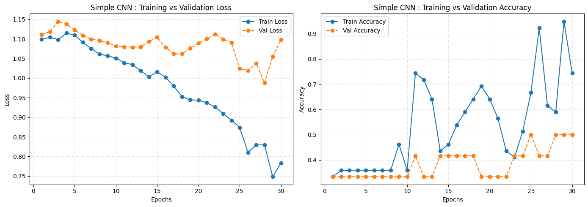
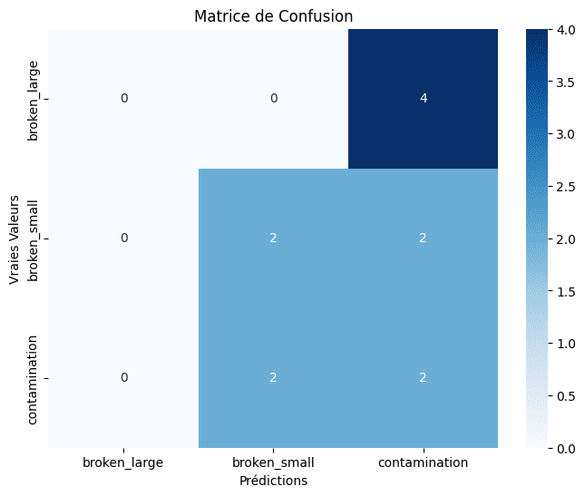
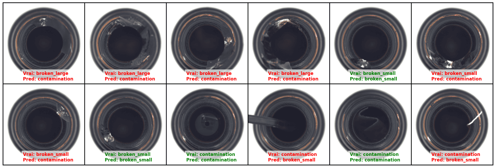
Phase 2 — ResNet18 Feature Extraction
Hypothesis & Gains: Freezing the ImageNet backbone (requires_grad = False) and training only the linear classifier head (fc: 512 → 3) for 30 epochs using Adam (1e-3). Accuracy doubled from 33.3% to 66.7% (+33.4% boost), demonstrating the necessity of pre-trained feature representations on constrained datasets.
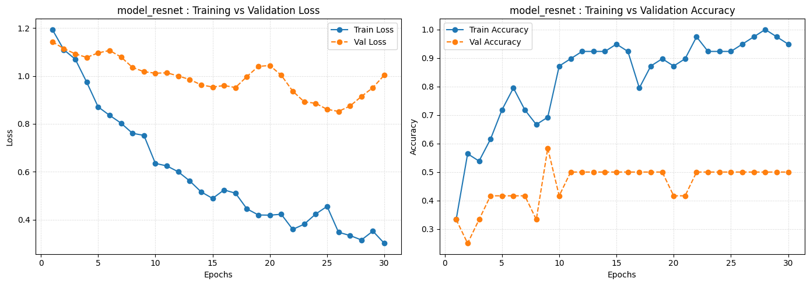
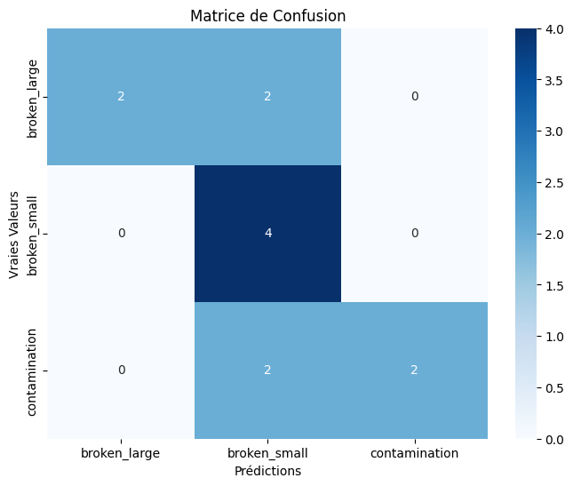
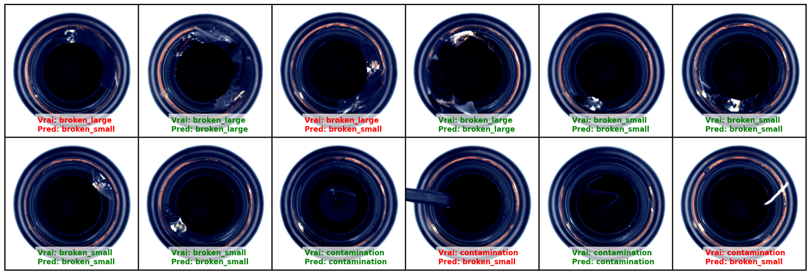
Phase 3 — ResNet18 Partial Fine-Tuning
Hypothesis & Optimal Result: Unfreezing layer4 while keeping earlier layers frozen, fine-tuning for 30 epochs with differential learning rates (1e-5 for layer4, 1e-4 for fc head). This enabled deep convolutional kernels in layer4 to adapt specifically to glass surface micro-anomalies while preserving low-level spatial features, achieving an optimal Multi-Class Accuracy of 75.0% (Macro F1 = 0.74), representing an +8.3% increase over Feature Extraction.
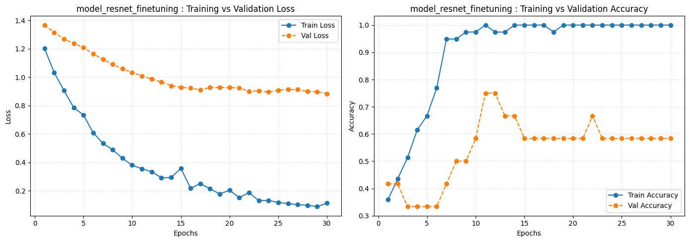
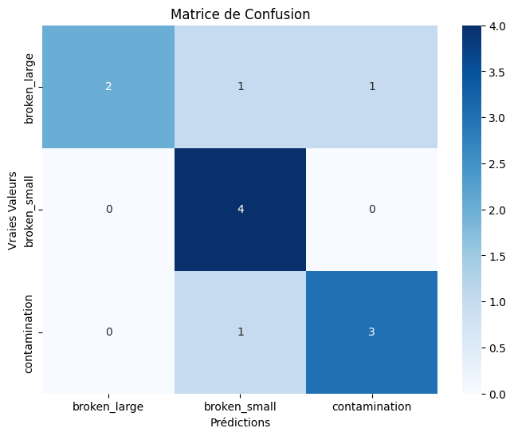
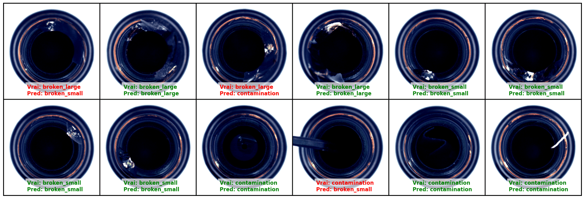
Final Results & Quantitative Benchmarks
The comparative tables below synthesize quantitative model performance across binary and multi-class inspection tracks.
Track 1: Binary Classification Performance
| Model Architecture | Training Strategy | Accuracy | Recall (Bad) | Precision | F1-Score |
|---|---|---|---|---|---|
| Custom CNN | From Scratch | 97.2% | 95.5% | 98.0% | 0.967 |
| ResNet50 (Final) | Transfer Learning | 100.0% | 100.0% | 100.0% | 1.000 |
Track 2: Multi-Class Anomaly Performance (39 Training Samples)
| Model Architecture | Strategy | Accuracy | Macro F1 | Performance Breakdown |
|---|---|---|---|---|
| Custom CNN | From Scratch | 33.3% | 0.28 | Severe overfitting; random chance baseline. |
| ResNet18 FE | Feature Extraction (fc head) | 66.7% | 0.67 | +33.4% gain; frozen ImageNet feature representations. |
| ResNet18 FT (Final) | Partial Fine-Tuning (layer4 + fc) | 75.0% | 0.74 | Optimal configuration; adapted deep spatial filters (+8.3%). |
Explainability (XAI) & IoU Spatial Validation
To address black-box interpretability requirements in industrial environments, we implemented Grad-CAM (Gradient-weighted Class Activation Mapping) targeting feature maps from the final convolutional layer (layer4[-1]) of ResNet50. Grad-CAM computes backpropagated gradient weights to generate visual activation heatmaps.
To transform qualitative heatmaps into a quantitative metric, activation maps were binarized and evaluated via Intersection over Union (IoU) against pixel-level Ground Truth segmentation masks. This spatial validation confirms that activations align directly with physical defect regions rather than background clutter.

Design Decisions & Architectural Rationale
Architectural choices were guided by data constraints, optimization trade-offs, and industrial verification requirements:
Why Residual Architectures?
Residual connections (ResNet50 for binary, ResNet18 for multi-class) prevent vanishing gradients during deep feature extraction, providing pre-trained ImageNet representations compatible with Grad-CAM gradient backpropagation.
Why Transfer Learning?
Training millions of parameters from scratch on 39 images causes immediate overfitting. Freezing early convolutional blocks preserves generic edge and texture filters.
Why Partial Fine-Tuning?
Generic ImageNet representations require domain adaptation for subtle glass cracks. Unfreezing layer4 with differentiated learning rates (10-5 for layer4, 10-4 for fc) yielded an +8.3% accuracy gain without overfitting.
Why Grad-CAM?
Generates gradient-based activation heatmaps without requiring architectural modifications or impacting forward inference latency.
Why IoU Spatial Validation?
Converts qualitative heatmap inspection into a quantitative spatial precision metric by comparing binarized activations against Ground Truth masks.
Why Weighted CrossEntropy?
Mitigates the 229 Good vs 63 Bad sample imbalance by weighting defective classes (weights [5.6923, 1.2131]), achieving 100% Recall on anomalies.
Project Limitations & Critical Analysis
A thorough engineering evaluation requires identifying technical boundaries and methodological constraints:
- Constrained Sample Size: 39 multi-class training images constrain statistical confidence, necessitating further validation on larger sample populations.
- Single Benchmark Category Scope: Experiments focused on the MVTec AD Bottle category; evaluating generalizability requires cross-category validation (e.g., cables, transistors).
- Single Train/Test Split: Evaluation followed the standard benchmark split without K-Fold cross-validation, which could be incorporated to measure variance across data folds.
- Absence of Recent Architecture Baselines: Comparison was limited to CNNs and ResNet50; future benchmarks should include modern backbones (ConvNeXt, Vision Transformers).
- Saliency Interpretability Limits: Grad-CAM provides gradient saliency visualizations rather than causal mechanistic guarantees of model decision-making.
Conclusion & Engineering Synthesis
This case study demonstrates the technical progression required to build a reliable visual inspection system under severe industrial data constraints. By systematically benchmarking custom CNN baselines against pre-trained residual networks, the evaluation highlights the critical role of Transfer Learning on constrained datasets—doubling multi-class accuracy from 33.3% to 66.7%—while full Fine-Tuning further adapts deep spatial representations to achieve a peak accuracy of 75.0%.
Beyond classification metrics, integrating Grad-CAM explainability coupled with quantitative IoU spatial validation addresses the black-box trust gap in industrial deployment. This dual focus on predictive accuracy and verifiable spatial localization reflects a practical AI engineering approach to automated quality control.
Summary of Project Outcomes
Project Resources & Notebook Links
Binary Classification Notebook
Access the full PyTorch implementation for CNN baseline, ResNet50 Transfer Learning (100% Acc), and binary evaluation metrics.
Multi-Class Anomaly Notebook
Explore Feature Extraction, Full Fine-Tuning (75.0% Acc), Grad-CAM heatmap generation, and IoU spatial validation code.
22 Visual Artifacts
Browse the complete gallery of experimental figures, confusion matrices, loss curves, and Grad-CAM overlays.
Complete Experimentation Gallery (22 Visual Artifacts)
Explore the complete collection of high-resolution experimental charts, confusion matrices, batch inspectors, prediction grids, and Grad-CAM spatial explainability overlays across binary and multi-class pipelines.
Binary Anomaly Classification Gallery (10 Artifacts)
Multi-Class Anomaly & XAI Gallery (12 Artifacts)